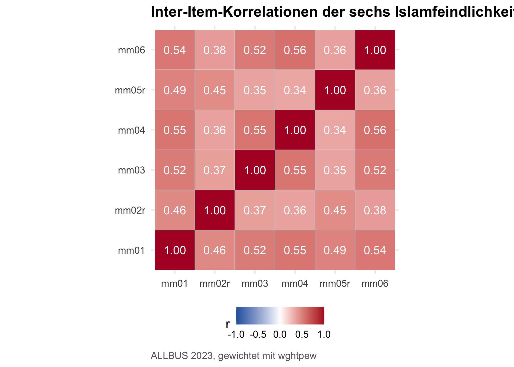

Messen die sechs Items wirklich eine einzige Einstellung — oder stecken da mehrere Dimensionen drin?
In Kapitel 5 hast du aus mehreren Items eine Skala gemacht. Aber: ist das eigentlich legitim? Lädt jedes Item gleichmäßig auf das Konstrukt, oder gibt es Ausreißer? Misst die Skala eine Sache oder mehrere? Und wie konsistent sind die Items untereinander?
Hinweis
Forschungsjournal: Wo stehst du in deiner Mini-Studie? Du hast Skalen gebaut und erste bivariate Befunde. Jetzt prüfst du den Maßstab selbst: Sind die Items dimensional sauber? Das ist der Validierungsschritt, der entscheidet, ob deine Befunde aus Kapitel 7 und die Modellierung in Kapitel 9 auf einem methodisch verteidigbaren Maß stehen. Wenn am Ende dieses Kapitels Cronbachs α > .7 und EFA + CFA ein konsistentes Bild zeichnen, hast du die Operationalisierung gegen Reviewer:innen verteidigt.
8.1 Worum es geht
In der Sozialforschung sind die wichtigsten Konstrukte latent — du kannst sie nicht direkt messen, sondern nur über Indikatoren erschließen. „Islamfeindlichkeit” ist keine Variable, die ein Befragter ankreuzt; es ist eine Hintergrundeinstellung, die sich in den Antworten auf mehrere Survey-Items niederschlägt.
Die methodische Frage: Wie viele latente Faktoren stehen hinter deinen Items, und wie zuverlässig misst die daraus konstruierte Skala das Konstrukt? Drei Werkzeuge tragen dich durch dieses Kapitel:
Korrelationsmatrix — die rohe Voraussetzung jeder Faktorisierung.
Explorative Faktorenanalyse (EFA) — wie viele Dimensionen erkundet man, ohne sie vorzugeben?
Reliabilität (Cronbachs α) — wie konsistent hängen die Items in einer Dimension zusammen?
Am Ende blicken wir kurz auf die konfirmatorische Faktorenanalyse (CFA) mit lavaan — das ist der nächste Schritt, wenn du eine Strukturhypothese prüfen statt nur erkunden willst.
Was du nach diesem Kapitel kannst
Eine Korrelationsmatrix für eine Itembatterie aufstellen, interpretieren und als Heatmap visualisieren.
Eine explorative Faktorenanalyse durchführen — inklusive KMO, Bartlett, Anzahl-Faktoren-Entscheidung und Rotation.
Cronbachs α berechnen, Item-Statistiken lesen und problematische Items identifizieren.
Den Unterschied zwischen PCA, EFA und CFA erklären — und wissen, wann welche Methode passt.
Ein einfaches CFA-Modell mit lavaan aufsetzen und Fit-Indizes interpretieren.
8.2 Korrelationsmatrix
Bevor du eine EFA rechnest, schaust du dir die Korrelationen aller Skala-Items an. Hohe Inter-Item-Korrelationen sind die Grundvoraussetzung jeder sinnvollen Faktorisierung.
Frage: Wie stark hängen die sechs Islamfeindlichkeits-Items untereinander zusammen?
Pearson Correlation: 6 variables [Weighted]
mm01 x mm02r: r = 0.459, p < 0.001 ***
mm01 x mm03: r = 0.520, p < 0.001 ***
mm01 x mm04: r = 0.548, p < 0.001 ***
mm01 x mm05r: r = 0.488, p < 0.001 ***
mm01 x mm06: r = 0.536, p < 0.001 ***
mm02r x mm03: r = 0.368, p < 0.001 ***
mm02r x mm04: r = 0.361, p < 0.001 ***
mm02r x mm05r: r = 0.450, p < 0.001 ***
mm02r x mm06: r = 0.381, p < 0.001 ***
mm03 x mm04: r = 0.548, p < 0.001 ***
mm03 x mm05r: r = 0.348, p < 0.001 ***
mm03 x mm06: r = 0.524, p < 0.001 ***
mm04 x mm05r: r = 0.341, p < 0.001 ***
mm04 x mm06: r = 0.564, p < 0.001 ***
mm05r x mm06: r = 0.363, p < 0.001 ***
15/15 pairs significant (p < .05), N = 3321
Lesart. mariposa gibt dir eine sauber formatierte Matrix mit Pearson-r, p-Werten und N pro Zelle. Werte zwischen 0.3 und 0.7 sind in einer gut funktionierenden Skala typisch — zu niedrig (< 0.2) deutet auf ein Fremdkörper-Item hin, zu hoch (> 0.85) auf Redundanz.
Hinweis
Reviewer-Hinweis. Eine Inter-Item-Korrelationsmatrix gehört in den Anhang eines empirischen Papers, das eine selbstgebaute Skala benutzt. Sie ist der schnellste Sanity-Check für die Operationalisierung — wer dort einen Wert nahe 0 oder über 0.85 sieht, fängt an, sich Sorgen zu machen.
8.2.1 Korrelationsmatrix visualisieren
Wenn du die Matrix lieber als Heatmap siehst, baust du sie mit ggplot2 selbst — das ist die tidyverse-Alternative zum klassischen corrplot(), mit voller Kontrolle über Farben und Beschriftung:
allbus|>select(mm01, mm02r, mm03, mm04, mm05r, mm06)|>cor(use ="pairwise")|>as_tibble(rownames ="Item1")|>pivot_longer(-Item1, names_to ="Item2", values_to ="r")|>ggplot(aes(Item1, Item2, fill =r))+geom_tile()+geom_text(aes(label =round(r, 2)), color ="white")+scale_fill_gradient2(low ="blue", mid ="white", high ="red", midpoint =0, limits =c(-1, 1))+coord_fixed()

Die ggplot2-Grammatik dahinter kennst du aus Kapitel 6.
8.3 Explorative Faktorenanalyse
Die EFA prüft, ob hinter mehreren beobachteten Variablen wenige latente Dimensionen stehen. mariposas efa() integriert in einem Aufruf alles, was du brauchst: KMO-Test, Bartlett-Test, Eigenwerte, Faktorladungen und (auf Wunsch) Rotation.
Frage: Bilden die sechs Items eine eindimensionale Islamfeindlichkeits-Skala, oder gibt es Sub-Faktoren?
Varianzanteil — wie viel der gemeinsamen Varianz die extrahierten Faktoren erklären.
Die Ladungen zeigen, wie stark jedes Item mit dem Faktor zusammenhängt. Werte ≥ 0.5 sind brauchbar, ≥ 0.7 hoch.
8.3.2 Zwei-Faktor-Lösung als Vergleich
In der Forschungsdebatte zu Islamfeindlichkeit wird mitunter zwischen kognitiv-stereotyper (z. B. mm06 „Fanatiker”) und politisch-restriktiver (z. B. mm04 „beobachten lassen”) Komponente unterschieden. Probieren wir es aus:
Lesart. Du siehst eine zweite Spalte mit Ladungen. Wenn sich die Items klar auf je einen Faktor verteilen (hohe Ladung auf F1 oder F2, nicht beide), ist die Zwei-Faktor-Lösung interpretierbar. Wenn die Trennung unscharf bleibt, ist die Einfaktor-Lösung die sparsamere Wahl.
Hinweis
Hintergrund: PCA, EFA, CFA — was unterscheidet sie?
PCA (method = "pca") sucht Komponenten, die maximal Varianz erklären — gut für Datenreduktion.
EFA (method = "ml" oder "minres") modelliert latente Faktoren hinter den Items — gut für Theoriebildung.
CFA (mit lavaan, siehe Kapitel 8.5) prüft ein vorab spezifiziertes Faktormodell — gut für Theorieprüfung.
In der Praxis: EFA, wenn du erkundest, CFA wenn du bestätigst.
Hinweis
Hintergrund: Wie viele Faktoren extrahieren? Die klassische Antwort heißt Kaiser-Kriterium: alle Faktoren mit Eigenwert > 1. Konservativer ist der Scree-Test: man wählt die Faktoranzahl an der „Knickstelle” im Eigenwerteverlauf. Modern (und in der Methodenliteratur empfohlen): Parallelanalyse — Vergleich der empirischen Eigenwerte mit Eigenwerten zufällig generierter Daten gleicher Größe. mariposa zeigt dir alle Eigenwerte; den Vergleich mit Zufallsdaten musst du im Moment noch über psych::fa.parallel() machen, wenn dir die einfache Lösung nicht reicht.
8.4 Reliabilitätsanalyse
Nachdem die EFA dir die Struktur zeigt, prüft die Reliabilitätsanalyse die innere Konsistenz — wie zuverlässig misst die Skala? Cronbachs α ist der Standard-Index dafür.
Lesart. Werte über α = 0.7 gelten als akzeptabel, über 0.8 als gut, über 0.9 als exzellent. Bei α < 0.6 misst die Skala wahrscheinlich kein einheitliches Konstrukt.
mariposa gibt dir zusätzlich pro Item:
Item-Total-Korrelation — wie stark hängt das einzelne Item mit der Summe der anderen zusammen?
α if item deleted — wie würde sich α verändern, wenn dieses Item entfernt würde?
Daraus liest du:
α steigt beim Entfernen → das Item passt nicht zur Skala, Kandidat zum Streichen.
α sinkt beim Entfernen → das Item trägt zur Reliabilität bei, behalten.
Item-Total-Korrelation < 0.3 → schwacher Beitrag, oft Hand in Hand mit dem ersten Punkt.
Ein Beispiel: zeigt die Item-Statistik, dass „α if item deleted” für mm04 von 0.84 auf 0.87 steigen würde, weißt du: mm04 passt nicht ganz zu den anderen — vielleicht weil es eine andere Facette (staatliche Restriktion) anspricht als die übrigen Items (persönliche Einstellung). Entweder du behältst es bewusst (theoretisch begründet) oder entfernst es (empirisch begründet).
Warnung
Vorsicht: Cronbachs α ist eine Untergrenze. Das berühmte α unterschätzt die wahre Reliabilität in fast allen Modellannahmen. In der modernen Methodenliteratur gilt McDonalds ω als sauberere Wahl, ist aber rechentechnisch aufwendiger (über lavaan-Modelle). Für ein Einsteigerbuch reicht α — wisse aber, dass es das gibt.
Hinweis
Reviewer-Hinweis. In einem Methodenbericht reicht nicht der α-Wert allein. Standard ist: α, Item-Total-Korrelationen aller Items, α-if-deleted aller Items — gerne in einer Tabelle. So kann die Leser:in selbst beurteilen, ob deine Skalenbildung methodisch konsistent ist.
8.5 Konfirmatorische Faktorenanalyse als Ausblick
Bisher haben wir die Faktorstruktur exploriert. Wenn du eine konkrete Hypothese hast — etwa „die sechs Items messen einen latenten Faktor” — und diese Hypothese prüfen willst, brauchst du eine konfirmatorische Faktorenanalyse. Dafür ist mariposa nicht gemacht; das übernimmt lavaan.
Wichtig
mariposa-Tipp: Bewusste Grenze. mariposa deckt EFA, Reliabilität und (logistische) Regression ab. Für CFA und Strukturgleichungsmodelle bleiben lavaan und semPlot die Standardpakete — auch in modernen Lehrbüchern. Das ist eine bewusste Spezialisierung: jedes Werkzeug für die Aufgabe, für die es gemacht ist.
Hintergrund: Wann CFA, wann nicht? Eine CFA macht Sinn, wenn:
Du eine konkrete theoretische Hypothese über die Faktorstruktur hast.
Deine Stichprobe groß genug ist (Faustregel: N ≥ 200).
Du dich auf strenge Verteilungs- bzw. Schätz-Annahmen einlässt (MLR, WLSMV bei ordinalen Items).
Wenn du Items einfach zu einer Skala zusammenfassen willst und keine Strukturhypothese prüfst, ist EFA + α der pragmatischere Weg.
Hinweis
Hintergrund: Methoden-Effekte umgepolter Items. Bei Skalen mit positiv und negativ formulierten Items (wie unserer Islamfeindlichkeits-Skala) bricht ein striktes 1-Faktor-CFA-Modell oft ein, weil die umgepolten Items miteinander korrelieren — auch nach Kontrolle des Hauptfaktors. Das ist kein inhaltlicher Sub-Faktor, sondern ein Methoden-Effekt (Akquieszenz). In der CFA löst man das, indem man Residual-Kovarianzen zwischen den umgepolten Items zulässt (mm02r ~~ mm05r). Diese Spezifikation ist methodisch sauber und in der Literatur etabliert.
Übungen
Tipp
Übung 1 — EFA der pa-Items (Reproduktion). Die Forschungsdebatte zu Populismus diskutiert, ob es sich um eine eindimensionale Einstellung handelt oder um drei Komponenten (Anti-Elitismus, People-Centrism, Manichäisches Weltbild). Führe eine EFA der sieben umgepolten pa-Items durch — zuerst mit n_factors = 1, dann mit n_factors = 3 und Varimax-Rotation. Welche Lösung passt besser?
Übung 2 — Reliabilität der Populismus-Skala (Reproduktion). Berechne Cronbachs α für die sieben umgepolten pa-Items. Welches Item hat die schwächste Item-Total-Korrelation? Würde Streichen die Reliabilität verbessern?
Übung 3 — Eigene Skala prüfen (Transfer). Greife auf die Skala zurück, die du in der Übung am Ende von Kapitel 5 gebaut hast (eigenes Konstrukt). Prüfe sie: (a) Korrelationsmatrix, (b) EFA mit 1 Faktor, (c) Cronbachs α. Schreibe in 2–3 Sätzen, ob die Operationalisierung methodisch tragfähig ist.
Keine Musterlösung — die Übung trainiert den vollständigen Validierungsworkflow.
Tipp
Übung 4 — CFA mit lavaan (Mini-Forschungsfrage). Falls du lavaan installiert hast: Spezifiziere ein 1-Faktor-CFA-Modell für die sechs Islamfeindlichkeits-Items, lass eine Residual-Kovarianz zwischen mm02r und mm05r zu (siehe Methoden-Effekt-Hinweis oben), und prüfe Fit-Indizes. Erfüllt das Modell CFI ≥ 0.95, RMSEA ≤ 0.08, SRMR ≤ 0.08?
Forschungsjournal: Stand deiner Mini-Studie. Deine Skalen sind methodisch validiert: Cronbachs α ist akzeptabel, die EFA bestätigt eine sparsame Struktur, und die CFA (siehe Übung 4) zeigt, dass ein 1-Faktor-Modell — sobald der Polungs-Methodeneffekt zugelassen wird — gut passt. Was als Nächstes kommt: In Kapitel 9 nimmst du diese Skalen und modellierst sie als abhängige bzw. unabhängige Variablen in multivariaten Modellen.
Was du jetzt weißt
Du erstellst gewichtete Korrelationsmatrizen mit pearson_cor() und visualisierst sie als Heatmap über ggplot2.
Du führst eine EFA mit efa() durch — inklusive KMO, Bartlett und Rotation.
Du berechnest Cronbachs α mit reliability(), liest Item-Statistiken und identifizierst problematische Items.
Du kennst den Unterschied zwischen PCA (Datenreduktion), EFA (explorativ) und CFA (konfirmatorisch).
Du weißt, wann CFA mit lavaan sinnvoll ist und wie eine Minimalspezifikation inkl. Methoden-Effekt aussieht.
Im nächsten Kapitel (Kapitel 9) wechseln wir das Genre: statt Struktur zu Erklärung — wir modellieren Islamfeindlichkeit als abhängige Variable und prüfen, welche soziostrukturellen und politischen Prädiktoren sie am besten erklären.